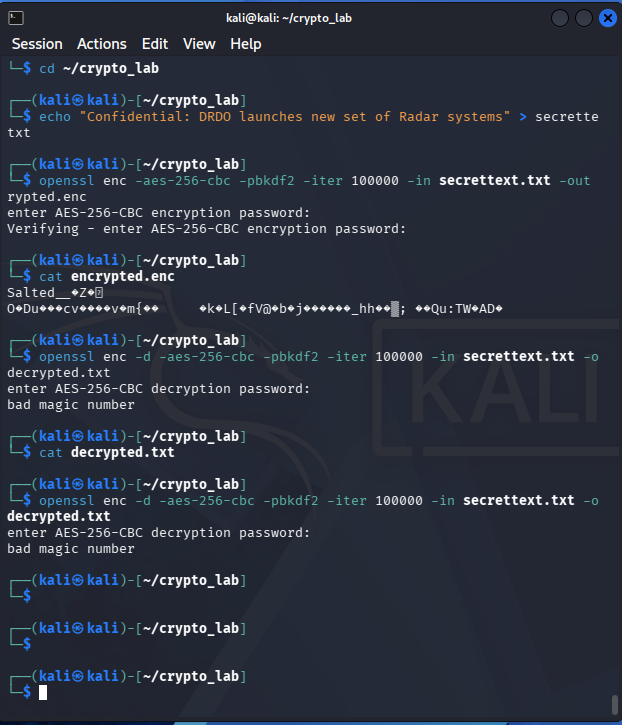
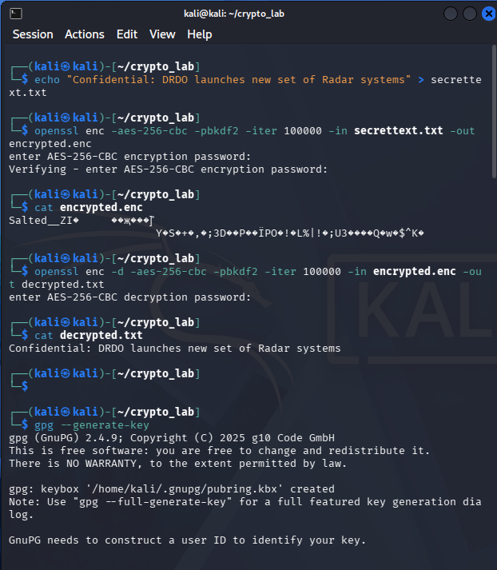
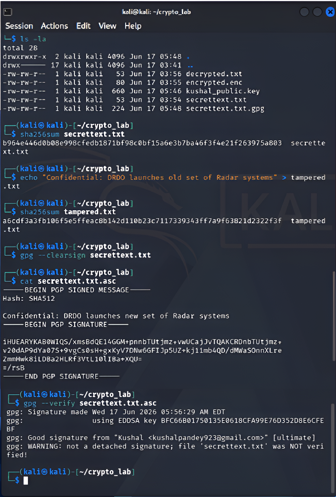

Day 1: Started Journey with an Error
Day_1 Cryptography
Day one of any cybersecurity journey is usually spent fighting installation wizards. For me, that meant setting up Oracle’s VirtualBox and booting up a pre-built Kali Linux image. One interesting "Did you know?" fact I learned is that Kali is a rolling-release operating system, meaning it constantly updates its packages to ensure its heavy-hitting security tools never suffer from a lack of optimization.
Once my sandbox environment was rock-solid, I dove straight into the core of security: Cryptography- the art of transforming plain, readable text into scrambled, unreadable ciphertext. The ultimate goal here is simple, protecting confidentiality and proving authenticity.
Cryptography is usually split into its two primary workflows Symmetric and Asymmetric
Symmetric encryption uses a single, shared private key to both lock and unlock data. It’s incredibly lightweight and fast, but it suffers from a massive roadblock known as the key distribution problem. If you have to share that secret key over a public network to let someone decrypt your message, you run an immense risk of interception.
Asymmetric encryption completely solves this by deploying a mathematically linked key pair: a Public Key (which you give to the world to encrypt data) and a Private Key (which only you keep secret to decrypt it).
To test this, I used OpenSSL (a built-in Linux crypto library) to play with AES-256 encryption. It breaks data into 128-bit blocks and scrambles them using a key length that yields 2256 total combinations. To put that absolute unit of a wall into perspective: if all the supercomputers on Earth worked simultaneously, it would still take over 3 × 1051 years (millions of billions of trillions of years) to guess the right key via brute force.
Yet, I still managed to break it on my first try... sort of.
Troubleshooting OpenSSL
I ran straight into a classic bad magic number error. Because I accidentally inverted
my input flags, I fed a plaintext file into a decryption command. OpenSSL checked the very
beginning of the file for its mandatory file signature bytes (Salted__), failed to find them,
and stopped immediately. Once I corrected the file flags, my message decrypted flawlessly.

GPG Keys & One-Way Hashes
Next, I moved on to GPG (GNU Privacy Guard) to set up an asymmetric identity. I generated my key pair using modern Elliptic Curve Cryptography(cv25519), exported my public key, and simulated a recipient-only data transfer.

Finally, I experimented with Hashing using SHA-256. Unlike encryption, hashing is a strictly one-way, deterministic process that acts as a digital fingerprint for data integrity. I even simulated a tampering attack and due to the avalanche effect of Hashing, the string changed entirely.
